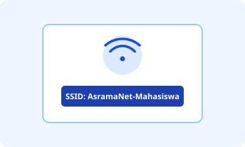
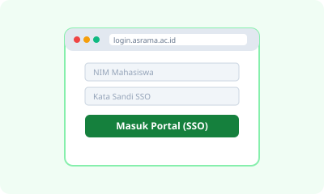
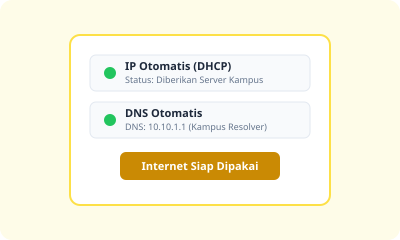

Status Jaringan Tiap Blok
Pantau kondisi operasional Access Point (AP) Wi-Fi di seluruh blok hunian asrama secara real-time.
Blok B (Gedung 2)
NormalBlok C (Gedung 3)
PemeliharaanBlok D (Gedung 4)
NormalPanduan Koneksi Wi-Fi
Ikuti 3 langkah mudah berikut untuk menghubungkan perangkat Anda ke jaringan asrama kampus.

Langkah 1
Sambungkan ke SSID Asrama
Aktifkan Wi-Fi di ponsel atau laptop Anda, kemudian pilih jaringan bernama AsramaNet-Mahasiswa tanpa tanda kunci.

Langkah 2
Autentikasi Akun SSO
Buka peramban (browser) ke halaman login.asrama.ac.id, lalu masukkan Nomor Induk Mahasiswa (NIM) dan kata sandi SSO Anda.

Langkah 3
Pastikan IP & DNS Otomatis
Pastikan adaptor jaringan diatur ke opsi DHCP (Otomatis) agar alamat IP dan server DNS kampus terpasang tanpa bentrok.
Pertanyaan Sering Diajukan (FAQ)
Ketik pertanyaan atau kata kunci untuk menyaring solusi mandiri terkait koneksi, DNS, dan IP.
Kenapa Wi-Fi tersambung tapi tidak bisa membuka situs?
Kemungkinan cache DNS lokal di perangkat Anda bermasalah. Coba buka Command Prompt (CMD) di laptop lalu jalankan perintah ipconfig /flushdns, atau ganti DNS sementara ke DNS kampus (10.10.1.1) atau Cloudflare (1.1.1.1).
Bagaimana cara melihat alamat IP di HP?
Buka menu Pengaturan (Settings) > Wi-Fi > ketuk tanda 'i' atau ikon roda gigi di sebelah nama Wi-Fi asrama yang terhubung, lalu gulir ke bawah pada bagian 'Alamat IP' (biasanya berformat 10.x.x.x).
Apa yang harus dilakukan jika muncul galat 'DNS Server Not Responding'?
Periksa apakah pengaturan DNS adapter jaringan Anda berada pada mode otomatis (DHCP). Jika masih gagal, matikan Wi-Fi selama 10 detik lalu sambungkan kembali untuk memperbarui alokasi DNS server.
Apakah mahasiswa mendapatkan alokasi alamat IP statis atau dinamis?
Seluruh penghuni asrama mendapatkan alamat IP dinamis secara otomatis dari server DHCP asrama setiap kali perangkat berhasil tersambung ke jaringan.
Mengapa kecepatan Wi-Fi terasa lambat pada malam hari (20.00 - 23.00)?
Pada jam tersebut terjadi lonjakan trafik penggunaan (peak hours). Sistem router asrama menerapkan pembagian bandwidth otomatis agar semua kamar tetap mendapatkan akses internet yang adil.
Berapa batas maksimal perangkat yang boleh terhubung untuk satu akun?
Satu akun SSO mahasiswa dibatasi maksimal dapat login aktif pada 2 perangkat secara bersamaan (misalnya 1 laptop dan 1 smartphone).
Bagaimana jika halaman captive portal login tidak otomatis muncul di browser?
Buka aplikasi peramban web (Chrome, Firefox, atau Edge), lalu ketik manual alamat http://login.asrama.ac.id atau http://neverssl.com di kolom URL untuk memicu pop-up autentikasi.
Bagaimana cara melapor jika lampu Access Point (AP) di lorong kamar mati?
Gunakan formulir 'Lapor Gangguan' di portal ini. Masukkan nomor kamar terdekat dari AP yang padam dan deskripsikan bahwa lampu indikator AP di lorong tidak menyala.
Formulir Lapor Gangguan
Laporkan kendala Wi-Fi kamar Anda secara resmi agar tercatat di antrean penanganan teknisi Unit TI.
Daftar Laporan Gangguan Masuk
Data tersimpan di localStorage. Klik tombol status untuk mengubah tahap (Baru → Diproses → Selesai).
Laporan Belum Selesai:
0
| No | Kamar | Jenis | Deskripsi | Waktu Lapor | Status Penanganan (Klik Ubah) |
|---|
Belum ada laporan gangguan yang dikirim. Silakan kirim laporan pertama Anda lewat formulir di atas.